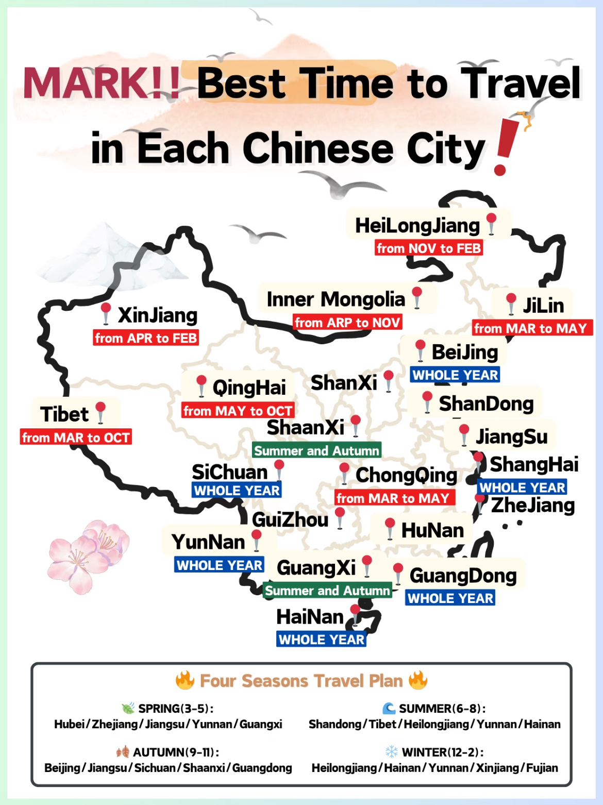

China is a country of breathtaking diversity, where every season unveils a new side of its natural beauty and vibrant culture. Whether you dream of cherry blossoms in spring, cool mountain escapes in summer, golden foliage in autumn, or magical snow in winter, there's a perfect Chinese city for every month of the year. This guide reveals the top destinations for each season—helping international travelers plan the ultimate trip, avoid crowds, and experience China at its most spectacular. Discover when and where to go for unforgettable adventures, stunning scenery, and authentic local experiences, all year round.
